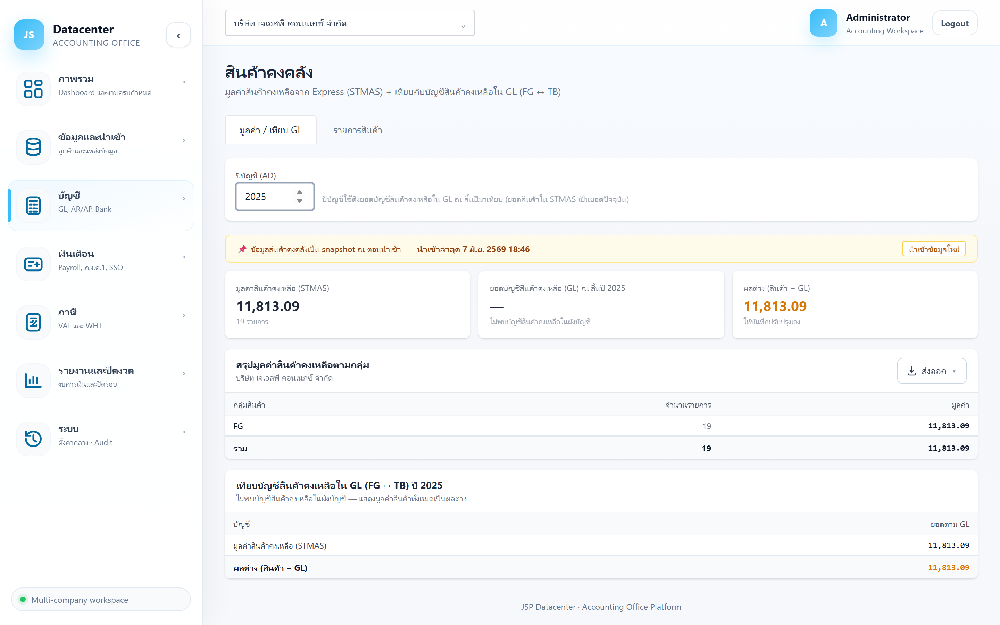
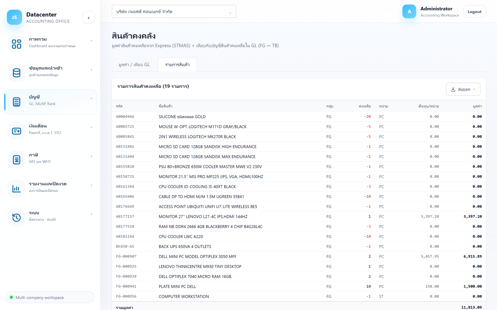

สินค้าคงคลัง
มูลค่าสินค้าคงเหลือจาก Express (STMAS) และ การเทียบกับบัญชีสินค้าคงเหลือใน GL — งานสำคัญตอนปิดงบเพราะสองยอดนี้ต้องอธิบายได้ว่าทำไมต่างกัน
เทียบ ยอดสินค้าจริงในคลัง (STMAS) กับ ยอดบัญชีสินค้าคงเหลือในสมุดบัญชี (GL) ถ้าต่างกันต้องบันทึกรายการปรับปรุงให้ตรงก่อนออกงบ
1. การเข้าใช้งาน
- เลือกบริษัทลูกค้า ที่แถบด้านบน
- เปิดเมนู บัญชี → สินค้าคงคลัง
- ที่แท็บ มูลค่า / เทียบ GL กรอก ปีบัญชี ที่ต้องการเทียบ
ช่องปีบัญชีใช้ดึงยอดบัญชีสินค้าคงเหลือใน GL ณ สิ้นปีนั้น มาเทียบ — ส่วนมูลค่าสินค้าจาก Express เป็น ยอดปัจจุบัน ณ ตอนนำเข้า ไม่ย้อนตามปี ถ้าจะเทียบให้มีความหมาย ต้องนำเข้าข้อมูลใกล้กับวันสิ้นรอบบัญชีที่กำลังปิด
2. แท็บ “มูลค่า / เทียบ GL”

การ์ดสรุป 3 ใบ
| การ์ด | ความหมาย |
|---|---|
| มูลค่าสินค้าคงเหลือ (STMAS) | ผลรวมมูลค่าสินค้าทุกรายการจาก Express พร้อมจำนวนรายการ |
| ยอดบัญชีสินค้าคงเหลือ (GL) ณ สิ้นปี … | ยอดรวมของบัญชีสินค้าคงเหลือในผังบัญชี ณ สิ้นปีที่เลือก |
| ผลต่าง (สินค้า − GL) | สีเขียว = ตรงกัน · สีเหลือง = ต่างกัน ต้องบันทึกปรับปรุงเอง |
แปลว่า ไม่พบบัญชีสินค้าคงเหลือในผังบัญชีของบริษัทนั้น ระบบจะแสดงมูลค่าสินค้าทั้งก้อนเป็นผลต่าง — ไม่ใช่ข้อผิดพลาดของระบบ แต่แปลว่าผังบัญชีไม่มีบัญชีที่ระบบจับคู่ได้ ให้ตรวจผังบัญชีใน Express
สรุปมูลค่าตามกลุ่มสินค้า
รวมมูลค่าตาม กลุ่มสินค้า ที่ตั้งไว้ใน Express (เช่น FG = สินค้าสำเร็จรูป)
พร้อมจำนวนรายการและมูลค่าของแต่ละกลุ่ม ใช้ดูสัดส่วนว่าเงินจมอยู่กับสินค้ากลุ่มไหน
ตารางเทียบ GL
| แถว | ความหมาย |
|---|---|
| บัญชี … (รายบัญชี) | บัญชีสินค้าคงเหลือแต่ละตัวในผังบัญชี พร้อมยอดตาม GL |
| มูลค่าสินค้าคงเหลือ (STMAS) | ยอดจากคลังสินค้า |
| ผลต่าง (สินค้า − GL) | ส่วนต่างที่ต้องอธิบายหรือปรับปรุง |
ระบบ ไม่ปรับให้อัตโนมัติ — ต้องตัดสินใจเองว่าฝั่งไหนถูก แล้วบันทึกรายการปรับปรุงที่เมนู กระดาษทำการปิดงบ สาเหตุที่พบบ่อย: ยังไม่ได้บันทึกปรับปรุงสินค้าปลายงวด, สินค้าเสียหาย/ตัดจำหน่ายที่ยังไม่ลงบัญชี, หรือมูลค่าใน Express เป็นยอดปัจจุบันที่เลยวันสิ้นงวดมาแล้ว
3. แท็บ “รายการสินค้า”
รายการสินค้าทีละตัว ใช้หาว่ามูลค่ารวมมาจากสินค้าตัวไหนบ้าง

| คอลัมน์ | ความหมาย |
|---|---|
| รหัส / ชื่อสินค้า | รหัสและชื่อจาก Express |
| กลุ่ม | กลุ่มสินค้าที่ใช้จัดหมวดในหน้าสรุป |
| คงเหลือ / หน่วย | จำนวนคงเหลือและหน่วยนับ |
| ต้นทุน/หน่วย | ต้นทุนต่อหน่วยที่ Express คำนวณไว้ |
| มูลค่า | คงเหลือ × ต้นทุนต่อหน่วย |
4. ปัญหาที่พบบ่อย
| อาการ | สาเหตุและวิธีแก้ |
|---|---|
| ขึ้น “ไม่มีสินค้าคงเหลือ” | ยังไม่ได้นำเข้าข้อมูลสินค้า (STMAS) หรือบริษัทนั้นไม่ได้ใช้ระบบสินค้าใน Express (กิจการบริการ) |
| ผลต่างเท่ากับมูลค่าสินค้าทั้งก้อน | ไม่พบบัญชีสินค้าคงเหลือในผังบัญชี — ตรวจว่าผังบัญชีมีบัญชีสินค้าคงเหลือจริงหรือไม่ |
| มูลค่าไม่ตรงกับที่นับสต๊อกจริง | ยอดเป็น snapshot ณ ตอนนำเข้า — ตรวจแถบวันที่นำเข้าล่าสุดแล้วนำเข้าใหม่ |
| ต้นทุนต่อหน่วยดูผิดปกติ | ต้นทุนคำนวณโดย Express ระบบไม่ได้คิดใหม่ — ต้องแก้ที่ Express แล้วนำเข้าใหม่ |
อีกยอดที่ต้องกระทบตอนปิดงบ — ธนาคาร / สมุดเงินฝาก →